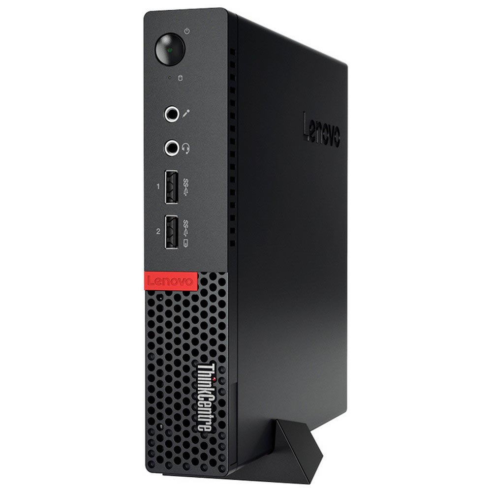

Mi nuevo mediacenter - ThinkCenter m710q
Como ya mencione en el articulo que hablaba sobre el cambio de servidor Mi nuevo servidor, me di cuenta de que me quedaba con la RPI4 de 4Gb sin utilizar.
Así que decidí cambiar la antigua RPI3, donde empezaba ya a tener problemas con los nuevos codecs con que venían las películas (HEVC 10b-AC3), y cambiarla por la RPI4 con soporte para estos nuevos codecs y que no usaba por haberla sustituido por el Dell.
Me puse manos a la obra con ello, pero ya os digo que me decepcionó un montón la RPI4.
Lo primero fue bajarme la imagen compatible de Libreelec para mi RPI4 y su posterior instalación. Todo esto conectado a un monitor que tengo en casa para estas pruebas / instalaciones.
No tuve ningún problema a la hora de la instalación y de la configuración (Wifi, plugins, conexión a SAMBA, etc…) todo perfecto. Luego lo conecto al TV que tengo en el salón con un conversor de HDMI a micro-HDMI y no funcionaba. No se veía nada, todo en negro. Aquí es donde pienso que no he hecho bien la instalación / configuración, que no lee correctamente la resolución, o sea las cosas más normales que te puedas imaginar.
Busqué información por inet, pregunté a uno de los canales de Telegram donde estoy que tratan sobre las RPI4 como mediacenter, etc… y todos me decían que tenía que forzar la resolución a través del fichero config.txt. Todo sin obtener ningún resultado.
Al final me cansé de trastear con la RPI4, y eso que había hecho miles de instalaciones pensando que ahí es donde residía el problema. Al final ya me quedó claro que el problema no era la instalación, sino el conversor de HDMI a micro-HDMI que no funcionaba correctamente. Así que el siguiente paso fue comprar un cable de HDMI a micro-HDMI.
Una vez que me llegó el cable correcto, vuelta a hacer una nueva instalación conectando la RPI4 al monitor de pruebas. Todo funcionaba a las mil maravillas, la WIFI excelente, la imagen perfecta, ahí es donde me dije: pues ya está todo en marcha y listo para volver a funcionar. ¡Ay, iluso de mí!
Me llevé la RPI4 al TV del comedor y la conecté y no me lo podía creer, todo funcionaba perfectamente. Pues ya está, lo vuelvo a tener todo en perfecto estado y en marcha hasta que puse a usar la RPI4 con la WIFI y aquí es donde se me cayó el mundo encima.
No me lo podía creer, la WIFI no funcionaba ni a patadas, la película se quedaba congelada y no se veía nada. Yo tirándome de los pelos porque no entendía nada, si hasta hace 5 minutos todo funcionaba correctamente y ahora de golpe y porrazo no funciona nada. Volvemos a estar como en el principio.
A partir de aquí todo fueron problemas. Pero vamos a explicar todo lo sucedido paso a paso.
Lo primero fue copiar la imagen de Libreelec en el SSD e iniciamos la instalación / configuración de Libreelec. Todo funciona perfectamente hasta llegar a la configuración de la WIFI (y esto sí que es para mear y no echar gota).
Después de buscar información como un loco, veo que hay un error (validado y reportado) en el diseño de la Raspberry que es que, cuando usas la WIFI, esta se acopla a la señal del cable HDMI y hace que se anule la señal WIFI. Para solucionar este problema se puede hacer de 3 maneras:
- Solución difícil, cambiar de canal en el que emite tu router por otro diferente para que no se acople a la señal del cable HDMI.
- Solución fácil, desactivar la WIFI de la Raspberry y usar un conector USB-WIFI.
- Solución ideal, esperar a que Raspberry saque un nuevo firmware que solucione este problema. Se comenta que hasta finales de año no estará disponible.
En mi caso, lo que hice fue escoger la solución fácil: me compré un USB-WIFI y volví de nuevo a configurar la RPI4B, esperando, por fin, poder usarla como HTC.
Volvemos a reiniciar la configuración de la WIFI sin ningún problema, esta vez ya tenemos la RPI4B conectada a la WIFI, pero parece ser que entre el SSD conectado a través de USB, el mando a distancia conectado a través de USB y el USB de la WIFI, la Raspberry no podía manejar correctamente toda la información que recibía.
Para que os hagáis una idea, la RPI3B funcionaba mejor que la RPI4B y eso que esta última (siempre lo añado a todos mis Libreelec) había creado el fichero advancedsettings.xml donde le añado lo siguiente:
<advancedsettings version="1.0">
<cache>
<buffermode>4</buffermode>
<memorysize>0</memorysize>
</cache>
</advancedsettings>
Donde:
buffermode: le indica a Kodi qué tipo de buffer se va a usar (en mi caso, selecciono el valor4para el tratamiento de ficheros a través de samba, nfs).memorysize: le indica a Kodi de qué manera va a usar la RAM (en mi caso, selecciono el valor0para que dé preferencia al SSD/HDD en vez de a la RAM).
De esta manera se consigue que mientras se visualiza la película / serie, se descargue el fichero y no tener problemas a la hora de la visualización.
Pero en mi caso, esto no pasa, para que os hagáis una idea de cómo funciona, había veces (da igual qué versión de mkv fuera, 264, 265) que Kodi se quedaba colgado, incluso usando un SSD.
Al final, cansado de ver que era imposible usar la RPI4B, empecé a investigar y a preguntar en un canal de Telegram sobre usar la Raspberry como HTC y se llegó a la conclusión de que era el USB el que se colapsaba y en cambio esto mismo (en la RPI3B) no pasa, porque como por defecto uso la WIFI que ya lleva incorporada, pues…
Así estamos, usando la RPI4B como HTC, desilusionado ante el mal funcionamiento de lo que tendría que ser la mejor Raspberry hasta el momento.
Por eso digo que maldito el día que se me ocurrió cambiar mi RPI3 (sé que era un cambio necesario, la tecnología siempre está en constante evolución y más los codecs para ver las películas son los que mandan) a la RPI4, y ahora la tengo tirada en casa sin usar, por culpa de este problema, aunque 😉 podría haberla vendido y sacarme una pasta, porque tal como están las RPI4, ganaría pasta seguro, pero me da pena venderla, porque nunca se sabe cuándo te va a hacer falta una.
Así que después (de nuevo, pregunté en otro canal de Telegram) me aconsejaron que lo mejor, y para ahorrarme futuros problemas, es tener un PC conectado a la TV del comedor y me ahorro todos los problemas derivados con los codecs y el soporte de estos, porque en un PC normal y corriente tiene más recorrido que la RPI4.
Fue lo que hice: volví a mi canal favorito de Thinkpads de Telegram y pregunté si a alguno le sobraba algún Tiny. Y ten por seguro que siempre hay alguien que le sobra un Tiny.
Como todo en este mundo, es mutable y ante la posibilidad de conseguir a buen precio un Lenovo ThinkCenter M710q, así que me lancé de cabeza por él.

Ya me veis, de tener 2 RPI (RPI4 con 4Gb como servidor y una RPI3 como mediacenter) a tener un Tiny Lenovo m710q con 8Gb y un i5-6500 como mediacenter y un Dell Optiplex 3050 con 8Gb y un i5-7500 como servidor.
Por eso digo que a veces no hay mal que por bien no venga.